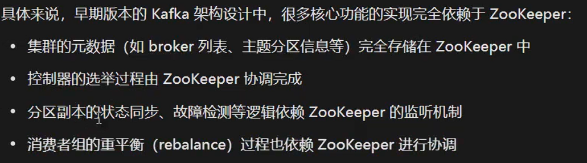

Kafka：KRaft 集群与消息收发
高吞吐 , 高性能 , 十分强大的日志系统;
Kafka 单节点安装
不认证, 不加密 ;
后面会有安装(认证 + 加密 + 分布式) kafka集群
当前学习的kafka是 2.8.0 版本之后的, 之前必须依赖ZooKeeper实现运行, 当时是实现kafka高可用的核心组件;
详情见下 :

之后新版本中,可以实现 KRaft 模式实现 kafka 的高可用,不用再安装zookeeper了
安装
使用 docker-compose 实现安装 ;
Apache 镜像通过 KAFKA_PROCESS_ROLES 进入 KRaft 模式 :
services:
kafka:
image: apache/kafka:4.3.1
container_name: kafka
hostname: kafka
restart: unless-stopped
ports:
- "9092:9092"
environment:
# 单节点 KRaft：当前 Kafka 同时承担 broker 与 controller。
KAFKA_NODE_ID: "1"
KAFKA_PROCESS_ROLES: "broker,controller"
# Controller 集群成员：节点 1 的 controller 地址。
KAFKA_CONTROLLER_QUORUM_VOTERS: "1@kafka:9093"
KAFKA_CONTROLLER_LISTENER_NAMES: "CONTROLLER"
# Broker 之间通信使用的监听器名称。
KAFKA_INTER_BROKER_LISTENER_NAME: "PLAINTEXT"
# 三个监听器名称与安全协议的映射。
KAFKA_LISTENER_SECURITY_PROTOCOL_MAP: "CONTROLLER:PLAINTEXT,PLAINTEXT:PLAINTEXT,PLAINTEXT_HOST:PLAINTEXT"
# Kafka 在容器内实际监听的地址与端口。
KAFKA_LISTENERS: "PLAINTEXT://:19092,CONTROLLER://:9093,PLAINTEXT_HOST://:9092"
# Kafka 告诉客户端“应该连接到哪里”。
KAFKA_ADVERTISED_LISTENERS: "PLAINTEXT://kafka:19092,PLAINTEXT_HOST://localhost:9092"
# KRaft 集群唯一 ID。
CLUSTER_ID: "4L6g3nShT-eMCtK--X86sw"
# 单节点环境中，内部主题副本数必须设为 1。
KAFKA_OFFSETS_TOPIC_REPLICATION_FACTOR: "1"
KAFKA_TRANSACTION_STATE_LOG_REPLICATION_FACTOR: "1"
KAFKA_TRANSACTION_STATE_LOG_MIN_ISR: "1"
KAFKA_GROUP_INITIAL_REBALANCE_DELAY_MS: "0"
KAFKA_NUM_PARTITIONS: "3"
# Kafka 数据目录。
KAFKA_LOG_DIRS: "/tmp/kraft-combined-logs"
volumes:
- "./data:/tmp/kraft-combined-logs"
在配置项中的易混点 :
1.9092设计的是kafka的客户端通信端口, 使用于外部客户端(生产者, 消费者) 与 kafka broker之间的通信 ;
2.9093设计的是kafka的控制器通信端口, 仅用于 KRaft 模式下控制器之间的内部通道 ;
Go Kafka 消费者 和 生产者
依旧先下载库
go get github.com/IBM/sarama
package main
import (
"fmt"
"log"
"github.com/IBM/sarama"
)
func main() {
// 1. 创建 Kafka 客户端配置
config := sarama.NewConfig()
// [可靠性] 要求所有“已同步副本”确认后，生产者才认为消息发送成功。
// 当前是单节点 Kafka，只有 1 个副本，等同于等待该 broker 写入成功。
config.Producer.RequiredAcks = sarama.WaitForAll
// [容错] 发送失败时，最多自动重试 3 次。
config.Producer.Retry.Max = 3
// [同步生产者必需] 开启成功响应，否则 SendMessage 无法返回成功结果。
config.Producer.Return.Successes = true
//想要实现自己分区的想法实现的
config.Producer.Partitioner = sarama.NewManualPartitioner
具体实现自己的分区逻辑,允许自己分区,否则还是按照系统那边实现的自己指定;
// 2. 创建同步生产者
// localhost:9092 对应你本机 Docker 映射出来的 Kafka 地址。
producer, err := sarama.NewSyncProducer([]string{"localhost:9092"}, config)
if err != nil {
log.Fatalf("failed to create producer: %s", err)
}
// [资源释放] main 结束前关闭网络连接并清理 producer。
defer producer.Close()
// 3. 指定发送目标 Topic
topic := "test_topic"
// 4. 连续发送 5 条消息
for i := 0; i < 5; i++ {
msg := &sarama.ProducerMessage{
// [消息目标] Kafka 的主题名
Topic: topic,
// [消息内容] StringEncoder 将字符串转换为 Kafka 可传输的字节数据
Value: sarama.StringEncoder(fmt.Sprintf("%d", i)),
}
// 5. 同步发送：会阻塞等待 Kafka 返回结果
// partition：该消息被分配到的分区
// offset：消息在该分区内的唯一递增位置
partition, offset, err := producer.SendMessage(msg)
if err != nil {
log.Printf("failed to send message: %s", err)
continue
}
fmt.Printf("Message sent to partition %d at offset %d\n", partition, offset)}}
package main
import (
"fmt"
"log"
"github.com/IBM/sarama"
)
func main() {
//配置消费者
config := sarama.NewConfig()
config.Consumer.Return.Errors = true
config.Consumer.Offsets.Initial = sarama.OffsetOldest //从最早的消息开始消费
//创建基础消费者(非消费者组模式)
consumer, err := sarama.NewConsumer([]string{"localhost:9092"}, config)
if err != nil {
log.Fatal(fmt.Sprintf("Error creating consumer: %s", err))
}
defer consumer.Close()
//创建指定消费的主题和分区
topic := "test-topic"
partition := int32(0) //分区编号
//获取分区消费者
//第三个参数为其实的偏移量
conpartition, err := consumer.ConsumePartition(topic, partition, sarama.OffsetOldest)
if err != nil {
log.Fatal(fmt.Sprintf("Error creating partition consumer: %s", err))
}
defer conpartition.Close()
for msg := range conpartition.Messages() {
//成功接收到消息
fmt.Println("%s %s %d %d\n", msg.Topic, msg.Partition, msg.Offset, string(msg.Value))
}
}
设置分区消费者的消费逻辑 :
- 使用OffsetOldest : 消费者读取消息的时候默认是从 0 开始读取消息 ;
- 使用OffsetNewest : 消费者读取消息是从当前所选的分区中去开始从最大的偏移量开始消费 ;
- 可以直接写入具体的数值限制偏移量 ;
多个生产者 对应 单个消费者
大部分使用 kafka 的场景就是多个生产者 , 直接向 kafka 狂发消息
然后就是消费者在后面 实现慢慢消费
这种模式下不需要使用额外的配置 , 直接使用生产者实现向 单个 topic 中疯狂吐数据 就可以了 ;
发布订阅模式
一个生产者, 多个消费者
如果使用的是默认消费者, 默认就是发布订阅模式
会直接广播当前的生产者, 有 相同topic的消费者即可实现 全局监听 ;
消费者组
之前的默认消费者，会有一个很大的问题，它要么只能从最开始的位置消费
要么从最新的位置消费，要么就自己指定偏移去消费
消费者自己是不知道自己消费到哪里了
使用消费者组（Consumer Group）可以自动实现 “记录消费位置” 的功能，无需手动管理偏移量，这是消费组最核心的优势之一。
同一个组的不同实例可以实现故障转移 , 其中的实例停止之后, 会有别的实例继续消费 ;
消费组会通过 Kafka 集群自动跟踪和存储每个分区的消费偏移量（
默认存储在 Kafka 内部的 __consumer_offsets 主题中），并在消费者重启或重平衡（Rebalance）时自动恢复消费位置，无需手动持久化偏移量。
// GroupConsumer 自定义消费者，实现 sarama.ConsumerGroupHandler 接口
type GroupConsumer struct{}
// Setup 在分区分配完成后调用（初始化）
func (c *GroupConsumer) Setup(_ sarama.ConsumerGroupSession) error {
return nil
}
// Cleanup 在分区被重新分配前调用（清理）
func (c *GroupConsumer) Cleanup(_ sarama.ConsumerGroupSession) error {
return nil
}
// ConsumeClaim 处理分区消息（核心逻辑）
func (c *GroupConsumer) ConsumeClaim(session sarama.ConsumerGroupSession, claim sarama.ConsumerGroupClaim) error {
// 遍历分区消息
for msg := range claim.Messages() {
// 处理消息（实际业务逻辑）
fmt.Printf("Received message: %s (topic: %s, partition: %d, offset: %d)\n",
string(msg.Value), msg.Topic, msg.Partition, msg.Offset)
// 手动提交偏移量（可选，若关闭自动提交则必须手动调用）
// 注意：需在消息处理成功后再提交，避免消息丢失
session.MarkMessage(msg, "") // 标记消息为已处理，会在 session 结束时提交
}
return nil
}
func main() {
// 配置消费组
config := sarama.NewConfig()
config.Version = sarama.V4_3_0_0// 指定 Kafka 版本（需与集群版本匹配）
// 偏移量配置：默认自动提交（可改为手动提交）
config.Consumer.Offsets.AutoCommit.Enable = true // 开启自动提交
config.Consumer.Offsets.AutoCommit.Interval = 5000 // 自动提交间隔（毫秒）
config.Consumer.Offsets.Initial = sarama.OffsetOldest // 初始偏移量（首次消费时）
// 创建消费组
groupID := "auto-offset-group" // 消费组唯一标识
consumerGroup, err := sarama.NewConsumerGroup(
[]string{"localhost:9092"}, // Kafka 地址
groupID,
config,
)
if err != nil {
log.Fatalf("Failed to create consumer group: %v", err)
}
defer consumerGroup.Close()
// 要消费的主题
topics := []string{"test-topic"}
consumer := &GroupConsumer{}
// 启动消费循环
go func() {
for {
// 持续消费（重平衡后会重新调用）
if err := consumerGroup.Consume(context.Background(), topics, consumer); err != nil {
log.Printf("Consume error: %v", err)
return
}
}
}()
// 等待中断信号
sigChan := make(chan os.Signal, 1)
signal.Notify(sigChan, syscall.SIGINT, syscall.SIGTERM)
<-sigChan
fmt.Println("Shutting down consumer group...")
}
实现多个消费者的实例的时候最好是实现封装好一个实例函数 ;
func startConsumer(brokers []string, groupId string, topics []string, idx int) {
config := newKafkaConfig()
consumerGroup, err := sarama.NewConsumerGroup(brokers, groupId, config)
if err != nil {
log.Fatalf("消费者%d创建失败: %v", idx, err)
}
defer consumerGroup.Close()
handler := &GroupConsumer{}
ctx := context.Background()
log.Printf("=== 第 %d 个消费者启动成功 ===", idx)
for {
if err := consumerGroup.Consume(ctx, topics, handler); err != nil {
log.Printf("消费者%d消费异常: %v", idx, err)
}
}
}
//创建三个消费者的实例对象, 使用的groupID 一致, 在一个组下三个实例
consumerNum := 3
for i := 1; i <= consumerNum; i++ {
go startConsumer(brokers, groupID, topics, i)
}
负载均衡模式
字面意思, 是出于消费者层面的 ;
一个消息可以被不是一个消费者组下的实例对象消费;
但是一个同消费者组ID的多个实例只能找一个来消费
package main
import (
"context"
"fmt"
"github.com/IBM/sarama"
"log"
)
// CreateTopic 新版标准：使用 ClusterAdmin 管理客户端
func CreateTopic(brokers []string, topic string, partitionNum int32, replicaNum int16) error {
config := sarama.NewConfig()
// 适配你的 Kafka 4.3.1
config.Version = sarama.V4_3_0_0
// 创建集群管理客户端
admin, err := sarama.NewClusterAdmin(brokers, config)
if err != nil {
return fmt.Errorf("创建管理客户端失败: %w", err)
}
defer admin.Close()
// 1. 判断主题是否存在
topics, err := admin.ListTopics()
if err != nil {
return fmt.Errorf("获取主题列表失败: %w", err)
}
if _, ok := topics[topic]; ok {
log.Printf("主题 [%s] 已存在，无需重复创建", topic)
return nil
}
// 2. 定义主题配置
topicDetail := &sarama.TopicDetail{
NumPartitions: partitionNum,
ReplicationFactor: replicaNum,
// 可额外配置：消息保留时间、清理策略等
ConfigEntries: map[string]*string{},
}
// 3. 创建主题
err = admin.CreateTopic(topic, topicDetail, false)
if err != nil {
return fmt.Errorf("创建主题失败: %w", err)
}
log.Printf("主题 [%s] 创建成功！分区数：%d，副本数：%d", topic, partitionNum, replicaNum)
return nil
}
func main() {
brokers := []string{"10.3.0.1:9092"}
topic := "legacy-topic"
partitions := int32(3) //分区数量
replicas := int16(1) //副本因子.防止kafka的节点挂掉
if err := CreateTopic(brokers, topic, partitions, replicas); err != nil {
log.Fatalf("操作异常：%v", err)
}
log.Println("全部操作执行完毕")
}
Apache Kafka UI
开源界的第一, 大厂标配 ;
企业中实现创建 topic, 一般是专门的人去创建 topic , 严禁使用代码手动创建topic , 只能使用 kafka web控制台;
version: '3.8'
services:
kafka-ui:
image: provectuslabs/kafka-ui:v0.7.2
container_name: kafka-ui
restart: always
ports:
- "8099:8080"
environment:
KAFKA_CLUSTERS_0_NAME: local-kafka
KAFKA_CLUSTERS_0_BOOTSTRAPSERVERS: 127.0.0.1:9092
volumes:
- C:/Docker/Kafka_Ui/data:/etc/kafka-ui
networks:
- kafka-net
networks:
kafka-net:
driver: bridge
Kafka 安全配置
配置认证, 加密
#!/bin/bash
# 创建证书目录（与 Docker 挂载目录一致）
mkdir -p kafka-certs && cd kafka-certs
# 生成 CA 证书
openssl genrsa -out ca.key 2048
openssl req -new -x509 -key ca.key -out ca.crt -days 3650 \
-subj "/C=CN/ST=Beijing/L=Beijing/O=YourCompany/CN=kafka-ca"
# 生成 Broker 证书（含 SAN 扩展）
cat > san.cnf <<EOF
[req]
distinguished_name = req_distinguished_name
req_extensions = v3_req
prompt = no
[req_distinguished_name]
C = CN
ST = Beijing
L = Beijing
O = YourCompany
CN = kafka-broker
[v3_req]
subjectAltName = @alt_names
[alt_names]
IP.1 = 127.0.0.1
DNS.1 = kafka-broker
IP.2 = 10.3.0.1
DNS.2 = kafka-broker
EOF
openssl genrsa -out kafka.server.key 2048
openssl req -new -key kafka.server.key -out kafka.server.csr -config san.cnf
openssl x509 -req -in kafka.server.csr -CA ca.crt -CAkey ca.key -CAcreateserial \
-out kafka.server.crt -days 3650 -extensions v3_req -extfile san.cnf
# 生成 JKS 格式证书（Bitnami 镜像专用）
openssl pkcs12 -export \
-in kafka.server.crt -inkey kafka.server.key \
-name kafka-ssl -out kafka.keystore.p12 \
-password pass:yourpassword -certfile ca.crt
keytool -importkeystore \
-srckeystore kafka.keystore.p12 -srcstoretype pkcs12 \
-destkeystore kafka.keystore.jks -deststoretype JKS \
-alias kafka-ssl -srcstorepass yourpassword -deststorepass yourpassword
# 生成 Truststore
keytool -keystore kafka.truststore.jks \
-alias ca-cert -import -file ca.crt \
-storepass yourpassword -noprompt
echo "证书已生成到 kafka-certs 目录，请挂载到容器的 /bitnami/kafka/config/certs"
services:
kafka-server:
image: bitnami/kafka:3.9.0
restart: always
ports:
- "9095:9095"
environment:
# KRaft 基础配置
- KAFKA_ENABLE_KRAFT=yes
- KAFKA_CFG_PROCESS_ROLES=controller,broker
- KAFKA_CFG_NODE_ID=1
- KAFKA_CFG_CONTROLLER_QUORUM_VOTERS=1@10.3.0.1:9093
- KAFKA_CFG_CONTROLLER_LISTENER_NAMES=CONTROLLER
# SSL 核心参数
- KAFKA_CFG_INTER_BROKER_LISTENER_NAME=SSL
- KAFKA_CFG_SSL_PROTOCOL=TLSv1.2
- KAFKA_CFG_SSL_CLIENT_AUTH=none # 生产环境建议改为 required
- KAFKA_CFG_SSL_KEYSTORE_LOCATION=/bitnami/kafka/config/certs/kafka.keystore.jks
- KAFKA_CFG_SSL_KEYSTORE_PASSWORD=yourpassword
- KAFKA_CFG_SSL_KEY_PASSWORD=yourpassword
# 监听器配置（关键！）SASL --> 认证, SSL --> 加密
- KAFKA_CFG_LISTENERS=INTERNAL://:9092,CONTROLLER://:9093,SSL://:9095 # 移除9094，将INTERNAL绑定到9092
- KAFKA_CFG_ADVERTISED_LISTENERS=SSL://kafka-broker:9095,INTERNAL://10.3.0.1:9092 # 内部服务地址改为9092
- KAFKA_CFG_LISTENER_SECURITY_PROTOCOL_MAP=CONTROLLER:PLAINTEXT,SSL:SASL_SSL,INTERNAL:PLAINTEXT # 移除PLAINTEXT相关映射
# SASL 认证（与 SSL 叠加）
- KAFKA_CFG_SASL_ENABLED_MECHANISMS=PLAIN
- KAFKA_CFG_SASL_MECHANISM_INTER_BROKER_PROTOCOL=PLAIN
- KAFKA_CLIENT_USERS=user1
- KAFKA_CLIENT_PASSWORDS=password1
volumes:
- ./kafka/kafka-certs:/bitnami/kafka/config/certs
配置大致为 设计外部连接 需要使用 SSL实现SASL认证 + SSL加密, 内部的连接直接访问不加密 ;
安全模式下的生产者
package main
import (
"crypto/tls"
"crypto/x509"
"fmt"
"github.com/IBM/sarama"
"log"
"os"
)
func main() {
// Kafka 配置
config := sarama.NewConfig()
// SASL 认证配置
config.Net.SASL.Enable = true
config.Net.SASL.User = "user1"
config.Net.SASL.Password = "password1"
config.Net.SASL.Mechanism = sarama.SASLTypePlaintext
// TLS 配置
config.Net.TLS.Enable = true
tlsConfig, err := newTLSConfig()
if err != nil {
log.Fatalf("Failed to create TLS config: %v", err)
}
config.Net.TLS.Config = tlsConfig
// 生产者配置
config.Producer.Return.Successes = true
config.Producer.Return.Errors = true
config.Producer.RequiredAcks = sarama.WaitForAll
// 创建生产者
producer, err := sarama.NewSyncProducer([]string{"kafka-broker:9095"}, config)
if err != nil {
log.Fatalf("Failed to create producer: %v", err)
}
defer producer.Close()
// 准备消息
topic := "test-topic"
message := &sarama.ProducerMessage{
Topic: topic,
Value: sarama.StringEncoder("Hello Kafka from Sarama!"),
}
// 发送消息
partition, offset, err := producer.SendMessage(message)
if err != nil {
log.Fatalf("Failed to send message: %v", err)
}
fmt.Printf("Message sent to partition %d at offset %d\n", partition, offset)
}
func newTLSConfig() (*tls.Config, error) {
// 1. 加载 CA 证书（用于验证服务端）
caCert, err := os.ReadFile("deploy-auth-ssl/kafka/kafka-certs/ca.crt")
if err != nil {
return nil, fmt.Errorf("failed to read CA cert: %v", err)
}
caCertPool := x509.NewCertPool()
if !caCertPool.AppendCertsFromPEM(caCert) {
return nil, fmt.Errorf("failed to parse CA cert")
}
// 2. 直接加载 PEM 格式的证书和私钥
cert, err := tls.LoadX509KeyPair(
"deploy-auth-ssl/kafka/kafka-certs/kafka.server.crt", // 从 PKCS12 导出的服务端证书
"deploy-auth-ssl/kafka/kafka-certs/kafka.server.key", // 从 PKCS12 导出的私钥
)
if err != nil {
return nil, fmt.Errorf("failed to load key pair: %v", err)
}
return &tls.Config{
RootCAs: caCertPool,
Certificates: []tls.Certificate{cert},
}, nil
}
安全模式下的消费者
package main
import (
"crypto/tls"
"crypto/x509"
"fmt"
"github.com/IBM/sarama"
"log"
"os"
)
func main() {
// Kafka 配置
config := sarama.NewConfig()
// SASL 认证配置
config.Net.SASL.Enable = true
config.Net.SASL.User = "user1"
config.Net.SASL.Password = "password1"
config.Net.SASL.Mechanism = sarama.SASLTypePlaintext
// TLS 配置
config.Net.TLS.Enable = true
tlsConfig, err := newTLSConfig1()
if err != nil {
log.Fatalf("Failed to create TLS config: %v", err)
}
config.Net.TLS.Config = tlsConfig
//创建基础消费者(非消费者组模式)
consumer, err := sarama.NewConsumer([]string{"localhost:9092"}, config)
if err != nil {
log.Fatal(fmt.Sprintf("Error creating consumer: %s", err))
}
defer consumer.Close()
//创建指定消费的主题和分区
topic := "test_topic"
partition := int32(0) //分区编号
//获取分区消费者
//第三个参数为其实的偏移量
conpartition, err := consumer.ConsumePartition(topic, partition, sarama.OffsetOldest)
if err != nil {
log.Fatal(fmt.Sprintf("Error creating partition consumer: %s", err))
}
defer conpartition.Close()
for msg := range conpartition.Messages() {
//成功接收到消息
fmt.Printf("%s %s %d %d\n", msg.Topic, string(msg.Value), msg.Partition, msg.Offset)
}
}
func newTLSConfig1() (*tls.Config, error) {
// 1. 加载 CA 证书（用于验证服务端）
caCert, err := os.ReadFile("deploy-auth-ssl/kafka/kafka-certs/ca.crt")
if err != nil {
return nil, fmt.Errorf("failed to read CA cert: %v", err)
}
caCertPool := x509.NewCertPool()
if !caCertPool.AppendCertsFromPEM(caCert) {
return nil, fmt.Errorf("failed to parse CA cert")
}
// 2. 直接加载 PEM 格式的证书和私钥
cert, err := tls.LoadX509KeyPair(
"deploy-auth-ssl/kafka/kafka-certs/kafka.server.crt", // 从 PKCS12 导出的服务端证书
"deploy-auth-ssl/kafka/kafka-certs/kafka.server.key", // 从 PKCS12 导出的私钥
)
if err != nil {
return nil, fmt.Errorf("failed to load key pair: %v", err)
}
return &tls.Config{
RootCAs: caCertPool,
Certificates: []tls.Certificate{cert},
}, nil
}
Kafka 高可用配置
集群配置
version: '3.8'
services:
kafka-1:
image: bitnami/kafka:3.9.0
container_name: kafka-1
restart: unless-stopped
environment:
- KAFKA_ENABLE_KRAFT=yes
- KAFKA_KRAFT_CLUSTER_ID=abcdef1234567890 # 集群唯一ID
- KAFKA_CFG_PROCESS_ROLES=controller,broker
- KAFKA_CFG_NODE_ID=1 # 唯一节点ID
- KAFKA_CFG_CONTROLLER_QUORUM_VOTERS=1@kafka-1:9093,2@kafka-2:9093
- KAFKA_CFG_CONTROLLER_LISTENER_NAMES=CONTROLLER
- KAFKA_CFG_INTER_BROKER_LISTENER_NAME=INTERNAL
# 核心修正：listeners和advertised.listeners使用相同的监听器名称
- KAFKA_CFG_LISTENERS=INTERNAL://:9092,EXTERNAL://:9094,CONTROLLER://:9093
- KAFKA_CFG_ADVERTISED_LISTENERS=INTERNAL://kafka-1:9092,EXTERNAL://10.3.0.1:9092
# 确保协议映射包含所有监听器名称
- KAFKA_CFG_LISTENER_SECURITY_PROTOCOL_MAP=CONTROLLER:PLAINTEXT,INTERNAL:PLAINTEXT,EXTERNAL:PLAINTEXT
ports:
- "9092:9094" # 外部访问映射到EXTERNAL监听器的9094端口
- "9093:9093" # 控制器端口
networks:
- kafka-network
kafka-2:
image: bitnami/kafka:3.9.0
container_name: kafka-2
restart: unless-stopped
environment:
- KAFKA_ENABLE_KRAFT=yes
- KAFKA_KRAFT_CLUSTER_ID=abcdef1234567890 # 与节点1相同的集群ID
- KAFKA_CFG_PROCESS_ROLES=controller,broker
- KAFKA_CFG_NODE_ID=2 # 唯一节点ID
- KAFKA_CFG_CONTROLLER_QUORUM_VOTERS=1@kafka-1:9093,2@kafka-2:9093
- KAFKA_CFG_CONTROLLER_LISTENER_NAMES=CONTROLLER
- KAFKA_CFG_INTER_BROKER_LISTENER_NAME=INTERNAL
# 核心修正：保持监听器名称一致
- KAFKA_CFG_LISTENERS=INTERNAL://:9092,EXTERNAL://:9095,CONTROLLER://:9093
- KAFKA_CFG_ADVERTISED_LISTENERS=INTERNAL://kafka-2:9092,EXTERNAL://10.3.0.1:9094
# 协议映射包含所有监听器名称
- KAFKA_CFG_LISTENER_SECURITY_PROTOCOL_MAP=CONTROLLER:PLAINTEXT,INTERNAL:PLAINTEXT,EXTERNAL:PLAINTEXT
ports:
- "9094:9095" # 外部访问映射到EXTERNAL监听器的9095端口
- "9095:9093" # 控制器端口（避免冲突）
networks:
- kafka-network
networks:
kafka-network:
driver: bridge
不同的kafka容器集群的ID一定要保持一致 , 但是独立的ID一定要实现区分;